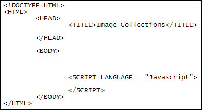
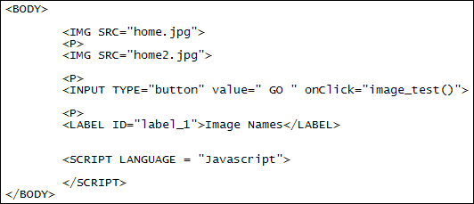
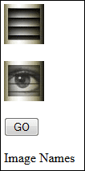
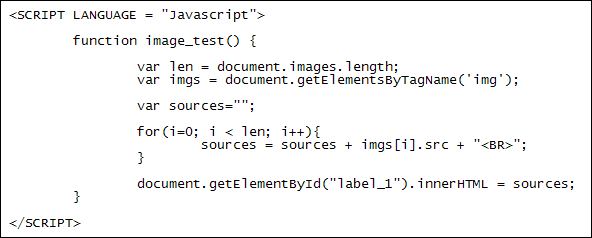

Javascript Image Manipulation
You can use Javascript to get at and manipulate images. This may involve creating new images, setting up an array of images, changing the source attribute in the BODY tag, or just doing some simple (or not so simple) animation with them. Let's start with referencing images in the BODY tag.
Images in the BODY tag
Any images you place between the two BODY tags of your HTML pages can be seen by Javascript. This is because whenever you add a picture with the IMG tag it is placed in a collection, which is a sort of array. The first picture that the browser can see, the one closet to the opening BODY tag, is place at position 0 in the collection. The second picture will be placed at position1, the third at position 2, etc.
So let's have a look at some code to see how that works. Create a new web page from your template for this and save it to its own folder. Now download these two pictures (right click each one, and then select "Save Image As" in Firefox, or "Save Picture As" in Internet Explorer). Save them inside of the new folder:


For your web page, move the two SCRIPT tags inside the BODY of the HTML, right at the end:

Now add the following HTML:

So we're adding HTML for two images, a button and a label. Save your work and your web page will look like this:

What we want to do here is to click the button and get a list all the images in the HTML. We'll print out the list on the label, which has an ID of label_1. The button has an onClick event. The function we want to call is image_test.
Add the image_test function between your two SCRIPT tags.
<SCRIPT LANGUAGE = "Javascript">
function image_test() {
}
</SCRIPT>
Now add the following line to the function:
var len = document.images.length;
To access all the images in your HTML document you only need the word images. You add it after the dot of document. The length property at the end returns the number of images the document has. To store all the images in an array, the code is this:
var imgs = document.images;
So it's just document.images. The image array will then be stored in the variable to the left of the equal sign.
If you don't want to set up an array, you can just do this:
document.images[0].src
The code above will return the SRC part of image 0 in your HTML.
Another way to get at all the images is like this:
var imgs = document.getElementsByTagName( 'img' );
You've already used getElementById. But you can also access the elements in your HTML code with getElementsByTagName. Note where all the capital letters are, and that Elements is plural. You use it to access collections, like all the images, or all the hyperlinks, or all the P tags.
Between the round brackets of getElementsByTagName you need the name of the tag you're trying to access. We want to get at all the image tags, so have typed img between two single quotes. (You can use double quotes, if you prefer. And the tag name doesn't have to be in lowercase, like we have it .) If you wanted to access all the hyperlinks on the page, you would type 'a' (or 'A') between the round brackets. The first link would then be at position 0 in the array.
To test all that theory out, add the following code to your script (the lines in bold):
var len = document.images.length;
var imgs = document.images;
document.getElementById("label_1").innerHTML = imgs[0].src;
You should find that a file path and image name will appear in the label:file_path/folder_name/home.jpg
Now change the second line of your Javascript to this:
var imgs = document.getElementsByTagName( 'img' );
After the innerHTML line, change the 0 into a 1. So this:
document.getElementById("label_1").innerHTML = imgs[1].src;
You should find that the file path and image name of the second picture ends up in the label.
You can loop through all the images on your page. Change you code to match ours below:

Once you're done, save your work and refresh. Click the button again and you should find that both file names print out.
Incidentally, if you were wondering why we added the SCRIPT tags at the end of the BODY section, it's because code in the HEAD section gets executed first. When you're experimenting with Javascript and images this could lead to errors as the images in the BODY section may not have finished loading. Our simple code is OK, though, as we're delaying execution by putting all the Javascript in a function.
In the next part, you'll see how to create new images with Javascript, as we code for a basic image scroller.